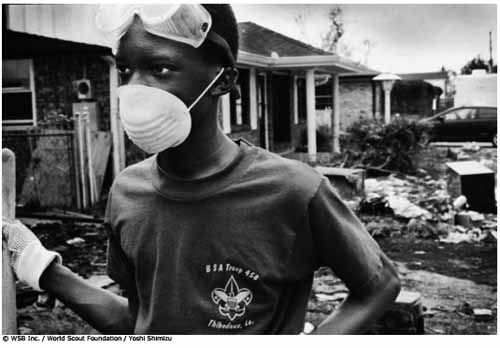

|
¡Preparados para el desastre! |
<<
Volver |

| Finalidad 5 Scouts trabajan por un mundo donde las personas están preparadas para responder a riesgos ambientales y desastres naturales. Objetivos educativos: Ser capaz de reconocer diferentes tipos de riesgos ambientales y desastres naturales y explicar por qué ocurren. Demostrar cómo prepararnos y reaccionar ante riesgos ambientales y desastres naturales en la comunidad. Edad: Tropa Resumen: Una actividad para crear un plan y equipo de respuesta a emergencias como preparción para desastres naturales. |
|
| Objetivo: Comprender por qué es
importante preparase para los desastres naturales. Materiales y equipo: Papel, bolígrafos, artículos del equipo de respuesta a emergencia (optativo), película del Movimiento Scout 'Desastres Naturales: Estarás preparado?' (optativa) Preparación: Estudia la lista de equipo de emergencia adjunta. Duración:Treinta minutos Lugar: Lugar de reunión Antecedentes: Los desastres naturales ocurren alrededor del mundo y pueden tener un efecto devastador en el ambiente y los seres humanos. Existen muchos tipos diferentes de desastres naturales, por ejemplo, huracanes, ciclones tropicales, tifones, tornados, sequías, inundaciones, erupciones volcánicas, deslizamientos, tsunamis, olas de calor, incendios forestales, plagas, hambrunas, epidemias, avalanchas y terremotos. Es muy importante que entendamos los desastres naturales. El efecto de un desastre natural puede minimizarse en ocasiones con una preparación cuidadosa, reconocimiento de las señales de peligro (si se presentan) y conocimiento de qué hacer una vez que el desastre ocurre. Necesitamos estar preparados para responder cuando | |